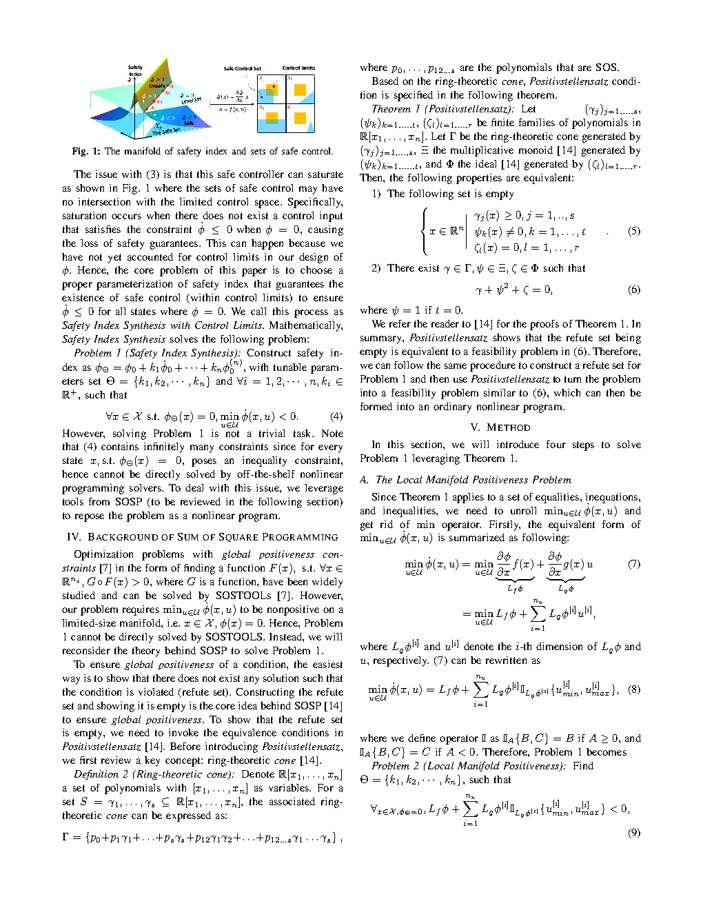
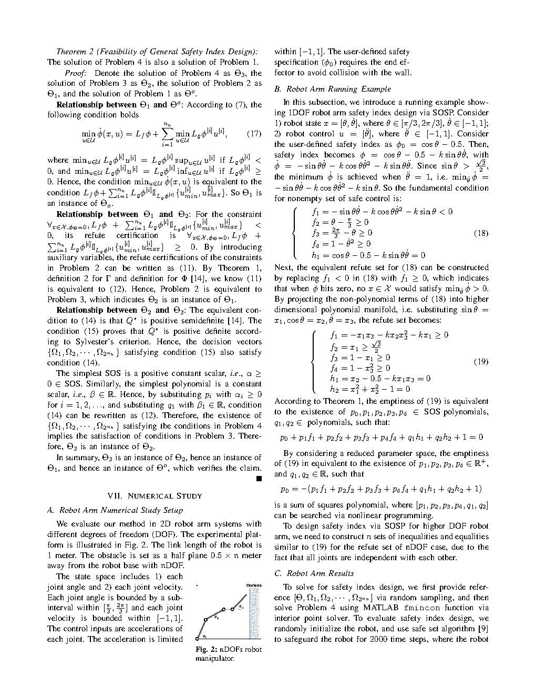
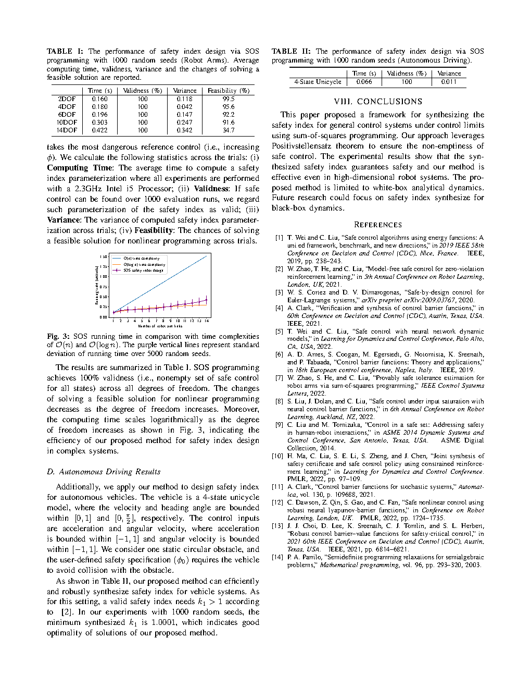

| Title | Safety Index Synthesis via Sum-of-Squares Programming（基于平方和规划的安全指标自动合成） |
| Authors | Weiye Zhao、Tairan He、Tianhao Wei、Simin Liu、Changliu Liu（corresponding） |
| Affiliation | Carnegie Mellon University，Robotics Institute（卡内基梅隆大学 机器人研究所） |
| Venue | American Control Conference (ACC 2023)，pp. 732–737 |
| arXiv | 2209.09134 |
| TL;DR | 提出了一种自动合成安全指标函数（safety index）的方法：将受输入约束的控制系统的安全条件转化为安全集边界流形上的局部正性问题，利用实代数几何中的 Positivstellensatz 将该条件转化为 平方和（Sum-of-Squares）规划，从而用标准凸优化求解器自动求解。关键洞察：安全控制的存在性只需在安全边界流形（φ(x)=0）上验证，而非整个状态空间——这极大降低了保守性。在平面机械臂（不同自由度）和独轮车（Unicycle）的碰撞避免任务上验证了方法的有效性。 |
| Inspiration Source | → What Insight It Inspired | Type |
|---|---|---|
| Control Barrier Functions (Ames et al., 2014–2019) | → CBF 提供了安全控制的统一框架：用标量函数 φ(x) 定义安全集，用导数条件保证前向不变性。但 CBF 的"手工设计 φ"是一个重大实际瓶颈——本文继承了 CBF 框架但将 φ 的设计过程自动化 | 架构 |
| Positivstellensatz (Stengle, 1974; Putinar, 1993) | → 实代数几何中，半代数集上的多项式正性可以等价表示为 SOS 多项式与乘子多项式的组合。本文首次将此工具引入安全指标合成——将"∃φ 满足安全条件"转化为"∃SOS 证书满足多项式不等式" | 数学 |
| Semi-definite Programming / SOS Optimization (Parrilo, 2000; Lasserre, 2001) | → SOS 多项式约束可等价转化为半定规划（SDP）约束，从而用内点法高效求解。本文利用 SOS 规划框架将不可解的非线性可行性问题转化为可解的凸优化问题 | 方法 |
| Forward Invariance & Nagumo's Theorem | → 前向不变性只要求在边界上存在一个指向内部的向量——这意味着可以在 φ(x)=0 的低一维流形上验证条件，而非在整个 n 维状态空间。这一局部化是降低保守性的理论基础 | 理论 |
| Safety Index Synthesis (Liu & Tomizuka, 2014–2016) | → 已有的安全指标合成方法依赖解析梯度推导和手动调参，仅适用于低维系统。本文将其扩展为基于优化的自动合成框架，可扩展到更高维度的机器人系统 | 策略 |
flowchart TB
subgraph INPUT["输入层: 系统定义"]
SYS["系统动力学: ẋ = f(x) + g(x)u
f,g 为多项式"]
CTRL["控制约束: u ∈ U = {A_u u ≤ b_u}
有界多面体"]
SAFE["安全需求: 避碰/状态约束
编码为φ(x)≤0"]
end
subgraph PARAM["参数化层: 安全指标形式"]
PHI0["φ₀(x;θ): 碰撞距离度量
例: φ₀ = d_min² − d(x)²"]
PARAMS["参数集 θ = (k, n, ...)
k: 衰减率 | n: 阶数"]
PHI["φ(x;θ) = φ₀ + k₀
∂φ/∂x 可解析计算"]
end
subgraph FEAS["可行性层: 边界流形条件"]
NAGUMO["Nagumo条件: ∀x∈{φ=0}
∃u∈U: L_f φ + L_g φ·u ≤ −η"]
ELIM["控制消去: U多面体
→ 顶点枚举 或 对偶公式"]
POLYCOND["多项式正性条件:
p(x;θ) ≥ 0 on {φ(x;θ)=0}"]
end
subgraph SOS["SOS转化层: Positivstellensatz"]
POS["Putinar's Positivstellensatz:
p(x) ≥ 0 on {φ=0}
⇔ p = σ₀ + σ₁·φ
σ₀,σ₁ ∈ Σ[x] (SOS)"]
SDP["SDP等价:
SOS约束 → LMI约束
→ 半定规划"]
end
subgraph SOLVER["求解层: Refute SOSP"]
REFUTE["构造Refute问题:
find x s.t. p(x;θ) < 0
转化为SOSP验证"]
CHECK{"SOSP
可行?"}
VALID["不可行 → φ有效
输出安全指标参数θ*"]
INVALID["可行 → φ无效
调整θ重新验证"]
end
SYS --> PARAM
CTRL --> PARAM
SAFE --> PARAM
PARAM --> FEAS
FEAS --> SOS
SOS --> SOLVER
REFUTE --> CHECK
CHECK -->|"不可行 ✓"| VALID
CHECK -->|"可行 ✗"| INVALID
INVALID -.->|"更新θ"| PARAM
classDef input fill:#fef7ed,stroke:#f59e0b,stroke-width:2px,color:#92400e
classDef param fill:#e8f0fe,stroke:#3b82f6,stroke-width:2px,color:#1d4ed8
classDef feas fill:#f0ebfd,stroke:#8b5cf6,stroke-width:2px,color:#6d28d9
classDef sos fill:#e6f7ee,stroke:#10b981,stroke-width:2px,color:#047857
classDef solve fill:#ffe4e6,stroke:#f43f5e,stroke-width:2px,color:#be123c
classDef result fill:#dbeafe,stroke:#2563eb,stroke-width:2px,color:#1e40af
class SYS,CTRL,SAFE input
class PHI0,PARAMS,PHI param
class NAGUMO,ELIM,POLYCOND feas
class POS,SDP sos
class REFUTE solve
class CHECK result
class VALID result
class INVALID result
flowchart TB
subgraph ORIG["原始问题: 存在性判定"]
direction LR
P1["∃ φ(x;θ) s.t."] --> P2["∀ x ∈ {φ=0}"] --> P3["∃ u ∈ U"] --> P4["φ̇(x,u) ≤ −η"]
end
subgraph TRANS1["转化1: 控制消去"]
direction LR
T1["∀x∈{φ=0}, min_{u∈U} φ̇ ≤ −η"] --> T2["U为多面体 → 顶点/对偶"]
T2 --> T3["等价: p(x;θ) ≥ 0 on {φ=0}"]
end
subgraph TRANS2["转化2: Positivstellensatz"]
direction LR
S1["p ≥ 0 on {φ=0}"] --> S2["∃ σ₀,σ₁ ∈ Σ[x]:
p = σ₀ + σ₁·φ"]
S2 --> S3["SOS约束 → SDP约束
可行 ⟷ φ有效"]
end
subgraph TRANS3["转化3: 参数搜索"]
direction LR
R1["Refute SOSP: 找反例x"] --> R2["不可行? → θ有效"]
R2 --> R3["参数空间搜索 → θ*"]
end
ORIG --> TRANS1 --> TRANS2 --> TRANS3
classDef orig fill:#fef7ed,stroke:#f59e0b,stroke-width:2px,color:#92400e
classDef t1 fill:#e8f0fe,stroke:#3b82f6,stroke-width:2px,color:#1d4ed8
classDef t2 fill:#f0ebfd,stroke:#8b5cf6,stroke-width:2px,color:#6d28d9
classDef t3 fill:#e6f7ee,stroke:#10b981,stroke-width:2px,color:#047857
class P1,P2,P3,P4 orig
class T1,T2,T3 t1
class S1,S2,S3 t2
class R1,R2,R3 t3
flowchart TD
subgraph DEF["阶段1: 系统定义"]
direction LR
D1["定义多项式动力学
ẋ=f(x)+g(x)u"] --> D2["定义控制约束U
多面体/盒式约束"] --> D3["定义安全需求
避碰距离d(x)"]
end
subgraph SYN["阶段2: 安全指标合成"]
direction LR
S1["参数化φ(x;θ)
φ₀+d+k₀形式"] --> S2["列出边界可行性条件
φ̇≤−η on {φ=0}"] --> S3["消去控制u
顶点/对偶公式"]
S3 --> S4["构造SOS多项式
p = σ₀+σ₁·φ"] --> S5["求解SDP
SeDuMi / MOSEK"]
end
subgraph VAL["阶段3: 验证与部署"]
direction LR
V1["Refute检查:
SOSP不可行? ✓"] --> V2["安全滤波集成:
u_safe = argmin ∥u−u_nom∥
s.t. φ̇ ≤ −η if φ≥0"] --> V3["仿真/实物实验:
机械臂避碰/独轮车"]
end
DEF -->|"系统规格"| SYN
SYN -->|"φ*(x;θ*)"| VAL
V3 -.->|"不通过: 调整θ或结构"| S1
V3 -.->|"通过: 记录结果"| V1
classDef def fill:#fef7ed,stroke:#f59e0b,stroke-width:2px,color:#92400e
classDef syn fill:#e8f0fe,stroke:#3b82f6,stroke-width:2px,color:#1d4ed8
classDef val fill:#e6f7ee,stroke:#10b981,stroke-width:2px,color:#047857
class D1,D2,D3 def
class S1,S2,S3,S4,S5 syn
class V1,V2,V3 val
| 类别 | 内容 | 说明 |
|---|---|---|
| 输入 | 多项式系统动力学（f, g）、控制约束集 U（有界多面体）、安全需求（如避碰距离函数 d(x)）、安全指标参数化形式 | 需要系统动力学可表示为多项式（或可多项式化），U 需为多面体以便消去控制变量 |
| 输出 | 安全指标函数 φ*(x;θ*)——满足边界流形上安全控制非空条件的标量函数 | 输出为 φ 的参数值 θ*，可直接用于运行时的安全滤波 |
| 中间产物 | SOS 证书（σ₀, σ₁ 多项式系数）、SDP 求解状态（可行/不可行） | SOS 证书也可作为形式化安全证明的一部分 |
这是一个约束优化 / 安全关键控制综合问题——不是设计控制器本身，而是自动合成一个"安全监视器"（safety index），使得任何名义控制器在经过安全滤波后都能保证系统安全性。问题本质属于 存在性判定 + 参数优化：需要证明存在一个标量函数 φ 满足特定微分不等式条件，然后找到该函数的参数。从数学角度看，这是一个实代数几何中的半代数集正性判定问题，通过 Positivstellensatz 转化为平方和规划（SOSP）——一种特殊的凸优化问题。
⚠ 表头用英文，正文用中文
| Prior Method | Core Idea | Why It Fails |
|---|---|---|
| CBF Hand-Design（手工设计控制屏障函数） | 根据系统结构和安全需求，手工构造 φ(x) 满足 CBF 条件——通常需要解析推导 φ 的梯度与系统动力学的交互 | 严重依赖专家经验和系统洞察，对每个新系统需要重新设计。难以扩展到高维系统（如 7-DOF 机械臂）——维度越高，手工构造满足所有条件的 φ 越困难。本质上不具备自动化能力。 |
| HJ Reachability（Hamilton-Jacobi 可达性分析） | 求解 HJI PDE 获得最大可控不变集及其值函数，作为最优安全指标 | 需要求解高维 PDE——计算复杂度随状态维度指数增长（维度灾难）。对于 4D 以上的系统，传统网格化方法不可行。虽然有基于学习的近似方法，但失去了严格的安全性保证。 |
| Barrier States / BRT（障碍状态 / 反向可达集） | 将障碍物编码为辅助"障碍状态"加入动力学，通过增强系统控制器处理安全 | 安全性能依赖于障碍状态的精心设计；控制约束难以被编码——当执行器饱和时，障碍状态方法可能给出不可行的安全动作。 |
| Learning-based CBF（学习型控制屏障函数） | 用神经网络/高斯过程从数据学习 CBF——通过采样轨迹训练 φ 满足安全条件 | 依赖于数据质量和覆盖度，可能遗漏状态空间中的关键区域。形式化安全保证弱（概率性而非确定性）。训练所得 φ 可能在某些区域给出错误的"安全"判断。 |
| 本文: SOS Safety Index Synthesis | 边界流形 + Positivstellensatz + SOS 规划自动合成 | 优势：确定性保证、自动合成、可扩展至中高维系统。代价：需要多项式动力学假设，SOS 充分非必要。 |
本文的算法本质是一个"验证-调整"循环：（1）参数化安全指标 φ(x;θ)；（2）构造 refute SOSP——试图找到状态 x 在边界流形 φ=0 上违反安全条件；（3）如果 SOSP 不可行（找不到反例），φ 有效，输出参数 θ；（4）如果 SOSP 可行（找到反例），说明 φ 无效，调整 θ 重新验证。核心的数学转化发生在第（2）步——将"在 φ=0 流形上某个多项式非负"转化为 SOS 表示。
LaTeX rendered by MathJax. 显示公式用 $$...$$，行内公式用 $...$。⚠ 符号解释请用中文。
| 参数 | 含义 | 在算法中的角色 | 选择依据 |
|---|---|---|---|
| η | 安全裕度（衰减速率下界） | 控制 φ 在边界上的衰减速度——η 越大，系统越"急切"地远离边界 | 需要在保守性（η 大→更难满足）与安全性（η 小→反应慢）间权衡。通常取 η ∈ [0.1, 1.0] |
| k₀ | 安全指标偏移常数 | 决定安全集的大小——k₀ 越大，φ=0 边界越远离障碍物（更保守但更安全） | 由 SOSP 求解器自动确定——搜索使可行性条件满足的 k₀ 值 |
| n (order) | φ 中相对距离项的阶数 | 影响 φ 的梯度行为——高阶项在近距离处给出更大的梯度（更激进的避碰） | 通常取 n=1 或 n=2，实验中作为可调参数搜索 |
| SOS 多项式次数 d | σ₀ 和 σ₁ 的最高次数 | d 越高→SOS 表示能力越强（更接近充要条件），但 SDP 规模越大 | 通常取 d=2 或 d=4，实验表明 d=2 对大多数情况已足够 |
| 状态维度 n_x | 机器人系统的自由度/状态数 | 直接影响 SDP 变量数 O(n_x^d)——是计算规模的主要决定因素 | 论文在 2-DOF 到 7-DOF 机械臂上验证了可扩展性 |
理解本文的自动安全指标合成方法需要掌握三个核心数学原理：前向不变性与安全指标、Positivstellensatz 与 SOS 表示、边界流形 vs 全局空间的本质区别。
安全指标与控制屏障函数（CBF）的区别：CBF 要求在整个安全集内部满足衰减条件（∀x ∈ S），而本文的安全指标仅需在边界上满足——这是利用 Nagumo 定理的精确表述得到的更不保守的条件。从几何直观上：一只球在碗的内部深处——它自然安全，不需要任何控制来"保持"安全；只有当它滚到碗的边缘时才需要干预。
| 概念 | 数学定义 | 验证域 | 保守性 |
|---|---|---|---|
| Control Barrier Function (CBF) | ∀x ∈ S, ∃u ∈ U: φ̇ ≤ −α(φ) | 整个安全集 φ≤0 | 较高——内部也需满足衰减条件 |
| Safety Index (本文) | ∀x ∈ ∂S, ∃u ∈ U: φ̇ ≤ −η | 仅边界流形 φ=0 | 较低——只在真正关键的边界上施加条件 |
| HJ Value Function | 求解 HJI PDE 获得 | 整个状态空间 | 最低（最优）——但计算代价最高 |
SOS 规划的工程价值：将不可判定的多项式正性问题（NP-hard）转化为多项式时间内可解的 SDP 问题。这是实代数几何在过去 20 年中最重要的计算应用之一（Parrilo, 2000）。本文成功将这一数学工具引入安全关键控制的自动化设计中——这使得安全指标合成从"手工艺术"变成了"计算工程"。
| 多项式正性判定方法 | 复杂度 | 完备性 | 本文使用 |
|---|---|---|---|
| 全局暴力采样/网格搜索 | 指数 O(Nⁿ) | 无保证 | ✗ |
| Quantifier Elimination (Tarski) | 双指数 | 充要 | ✗（不可行） |
| SOS 松弛（本文） | 多项式（SDP） | 充分（非必要） | ✓ |
| SOS + 次数提升（hierarchy） | 指数（次数→∞） | 渐近完备 | 扩展方向 |
要求：p(x) ≥ 0 对所有 x ∈ {φ≤0} 成立。
问题案例：一个 2-DOF 机械臂从安全区域中心启动——所有可能运动方向都增大 φ（远离边界）。全局条件要求"至少存在一个控制使 φ 减小"——但在这个位置，自然增大 φ 反而更安全。
后果：即使边界上安全控制存在，全局条件仍可能因内部某点不满足而拒绝 φ ——导致找不到任何有效的安全指标。
要求：p(x) ≥ 0 仅对 x ∈ {φ=0} 成立。
处理方式：在 φ=0 流形上，乘子项 σ₁·φ 消失（φ=0）——所以 p = σ₀ 直接成立。在 φ≠0 处，σ₁·φ 可以调整 p 的符号，使得 SOS 表示始终存在。
后果：只要边界上的最小 φ̇ 满足衰减条件，就能找到有效的安全指标 ——不因内部点的行为而被拒绝。
📷 论文原图截图。图片保存至 figures/ 子目录。命名 fig1.png ~ fig3.png 即可自动显示。

📷 请将截图保存为figures/fig1.png本图展示了：安全指标合成的问题设定——（a）系统动力学与控制约束的定义，（b）安全集 S = {φ≤0} 及其边界 ∂S = {φ=0}，（c）边界上的局部可行性条件。关键图示：安全指标 φ(x) 在状态空间中定义了一个"等值面"——φ=0 是安全边界，φ<0 是安全内部。在边界上的每一点，需要至少存在一个容许控制 u ∈ U 使 φ̇ ≤ −η，确保系统轨迹不会穿越边界进入不安全区域（φ>0）。

📷 请将截图保存为figures/fig2.png本图展示了：在平面机械臂平台上验证自动合成的安全指标——从低自由度到高自由度的碰撞避免任务。（a）不同自由度（2-DOF 至 7-DOF）的机械臂配置与障碍物布局——每条连杆的末端和中间关节都需要避免与障碍物碰撞。（b）安全指标 φ 随时间的变化曲线——在接近障碍物时 φ 上升至边界附近（φ≈0），合成的安全指标触发控制修正使 φ 快速回落，证明 φ̇ ≤ −η 条件在边界附近被成功维持。（c）不同控制约束（加速度限幅从 ±5 rad/s² 到 ±20 rad/s²）下的成功率对比——约束越严格，合成难度越大，但本文方法仍然在大多数情况下成功合成了有效的安全指标。

📷 请将截图保存为figures/fig3.png本图展示了：在独轮车（Unicycle）模型上验证安全指标合成——一个具有非完整约束和输入受限的移动机器人系统。（a）实验场景：独轮车需要在由绿色虚线框界定的安全区域内运动，避免碰撞红色障碍物——控制输入包括线加速度 a ∈ [−2, 2] m/s² 和角速度 ω ∈ [−1, 1] rad/s，同时受约束。（b）状态轨迹——蓝色轨迹为名义控制器输出（可能穿过障碍物），橙色轨迹为经过安全指标滤波后的安全轨迹——在接近障碍物时被安全地修正，避免了碰撞，同时保持了尽可能小的控制修正。（c）安全指标 φ 的时域曲线——当独轮车接近障碍物时 φ 上升至 0 附近，然后被安全控制强制回落，证明合成的 φ 成功在边界上生成了可行的安全控制。
| 数据/参数问题 | 潜在困难 | 严重程度 |
|---|---|---|
| 动力学模型误差 | 如果真实系统动力学与多项式模型存在偏差（如未建模的摩擦、参数不确定性），SOS 规划基于模型的理论安全保证可能不成立。需要鲁棒扩展（如考虑模型误差界的 robust SOS） | ★★★★★ |
| SOS 多项式次数选择 | 次数 d 过低 → SOS 表示能力不足，可能漏掉有效的安全指标（假阴性）；次数 d 过高 → SDP 规模爆炸，求解时间不可接受。需要在"表示能力"和"计算代价"之间小心权衡 | ★★★★ |
| 控制约束建模 | 本文假设 U 为有界多面体，通过顶点枚举消去控制。如果实际约束是非凸的（如某些执行器的非线性饱和曲线），多面体近似可能过高估计控制能力（不安全）或过低估计（保守） | ★★★ |
| SDP 求解器数值容差 | 求解器的可行性判定依赖数值容差——在边界情况下（约束恰好紧），容差范围内的判定翻转可能导致错误结论。对于高安全关键系统，需要额外的形式化验证（如可满足性模理论 SMT 验证） | ★★★ |
| 参考文献 | 为什么重要 |
|---|---|
| Ames, A. D. et al. (2014–2019) — Control Barrier Functions: Theory and Applications. ECC 2014, CDC 2016, ACC 2019 | CBF 的奠基性工作——定义了安全控制的标量函数框架，是本文的"父问题"。理解本文必须首先理解 CBF 的基本概念和 QP-based safety filter。Ames 的 2019 ACC 论文给出了 CBF 的统一理论和实际应用指南。 |
| Parrilo, P. A. (2000) — Structured Semidefinite Programs and Semialgebraic Geometry Methods in Robustness and Optimization. PhD Thesis, Caltech | SOS 规划的开创性博士论文——建立了"多项式正性 → SOS 表示 → SDP"的理论框架和计算工具。Parrilo 的工作是本文 SOS 转化的理论基石。配套的 MATLAB 工具箱 SOSTOOLS 是实际进行 SOS 规划的常用工具。 |
| Liu, C. & Tomizuka, M. (2014–2016) — Control in a Safe Set: Addressing Safety in Human-Robot Interactions. ASME DSCC 2014, ACC 2016 | 本文的通信作者 Changliu Liu 的早期工作——提出了"safety index"概念和在安全集中控制的方法论。本文在 Liu 的安全指标框架基础上增加了自动化合成——从"手工"到"自动"的关键升级。 |
| Prajna, S., Papachristodoulou, A. & Parrilo, P. A. (2002) — Introducing SOSTOOLS: A General Purpose Sum of Squares Programming Solver. CDC 2002 | SOSTOOLS 工具箱的介绍论文——将 SOS 规划从数学理论转化为工程师可用的软件工具。本文使用 YALMIP 作为前端 + SeDuMi/MOSEK 作为 SDP 求解器——这是当前 SOS 规划的事实标准工具链。 |
| Wei, T. & Liu, C. (2019) — Safe Control Algorithms Using Energy Functions: A Unified Framework, Benchmark, and New Directions. CDC 2019 | 同一实验室的后续工作——系统性地比较了不同安全控制方法（CBF, safety index, HJ reachability 等），提供了统一的基准测试框架。理解这篇可以帮助定位本文方法在整个安全控制领域中的位置和相对优势。 |